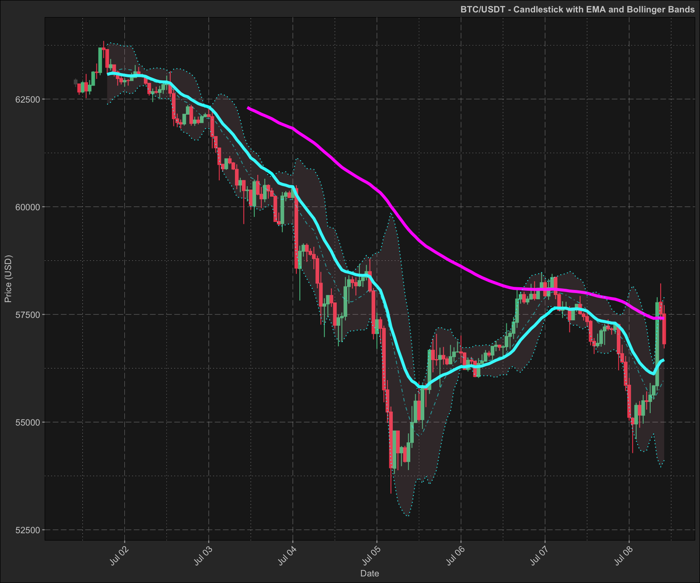
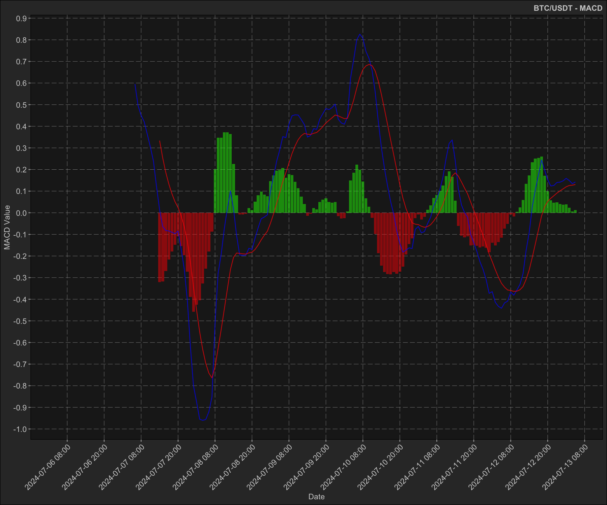
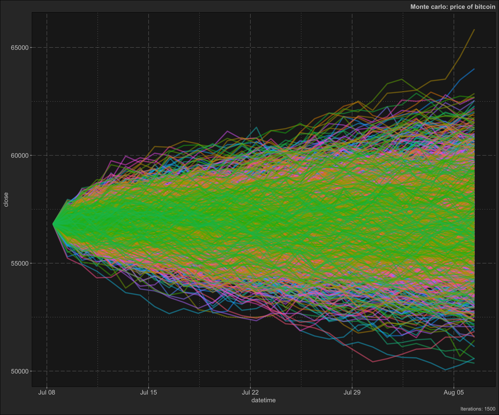
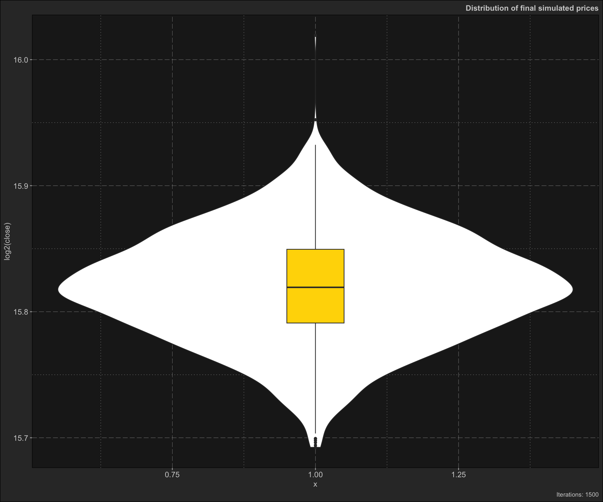
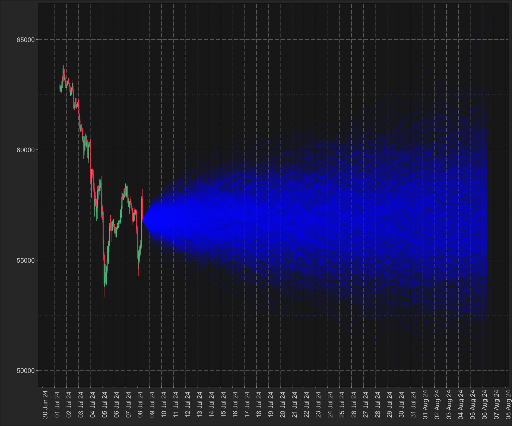
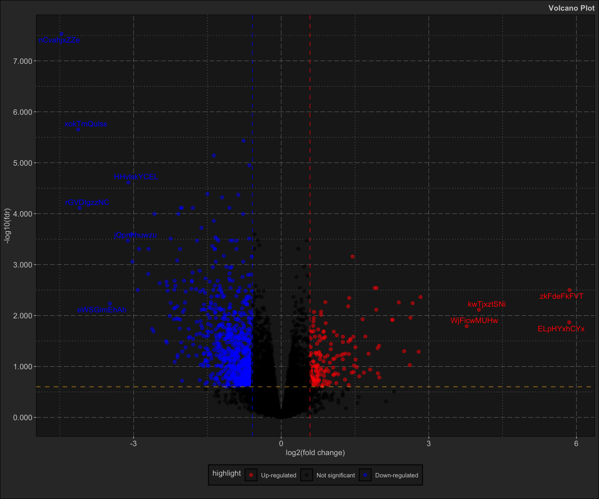
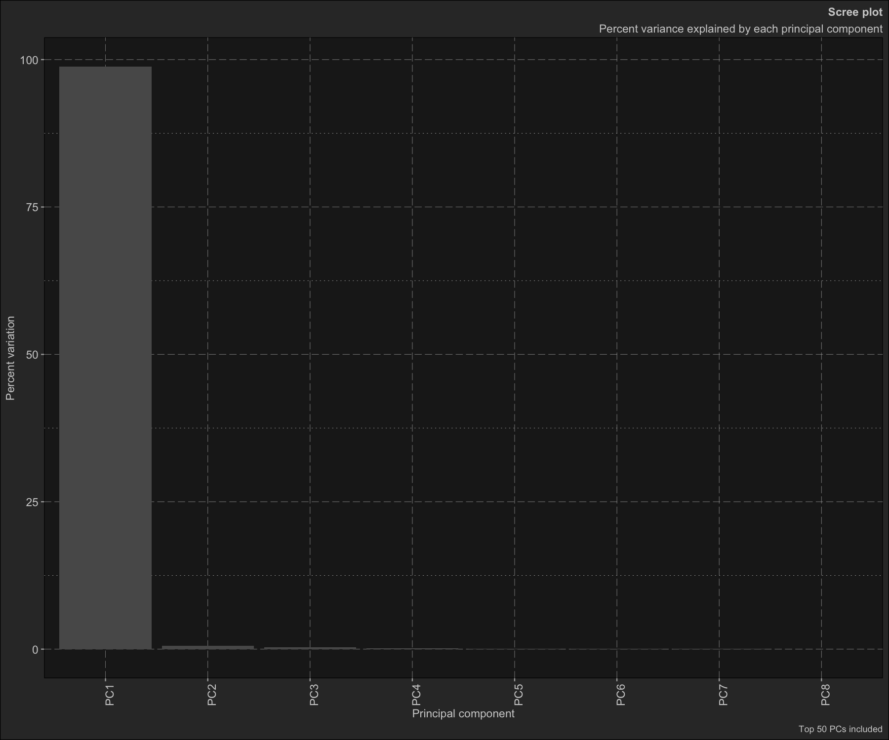
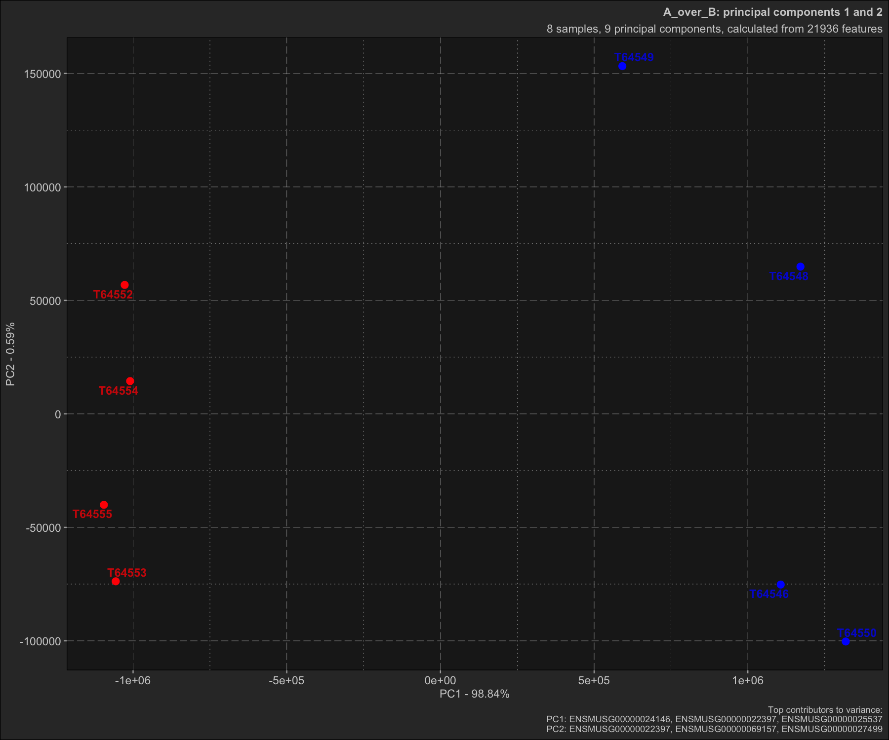
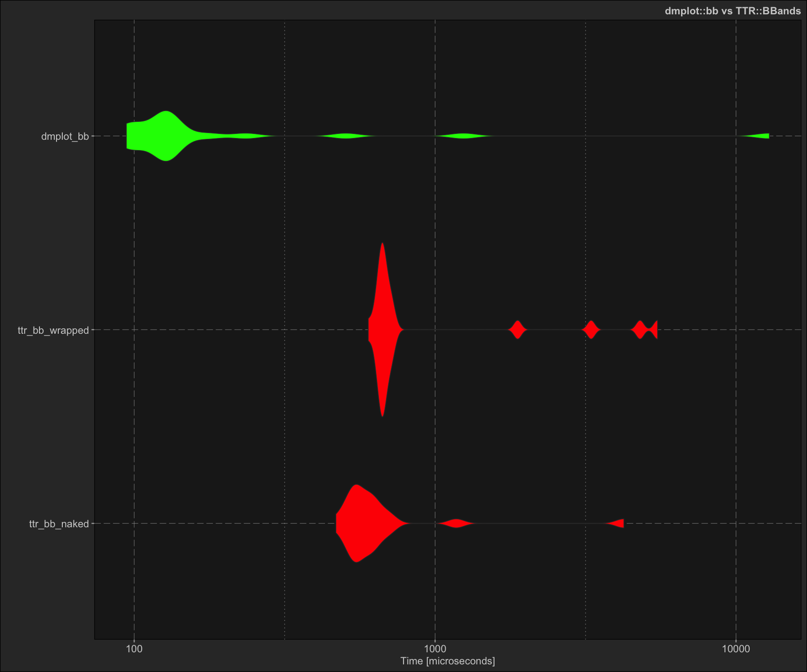

R framework written in high-performance C++ and ggplot2 for financial, bioinformatics, and time series data analysis.
The package provides algorithms, functions, ggplot2 layers and most importantly a framework for working with and analysing financial, bioinformatics, and time series data.
In short this package is a condensation and accumulation of all of all the knowledge I’ve gathered over the years spurred on by personal curiosity and framed by the need for order with a comprehensive framework.
Installation
You can install dmplot using:
# install.packages("remotes")
remotes::install_github("dereckmezquita/dmplot")Getting started - Finance
Get financial data
kucoin is a package for interacting with the kucoin.com API api. You can use any source of financial data as long as you pass the variables to the ggplot2 stat correctly.
ticker <- "BTC/USDT"
data <- get_market_data(
symbols = ticker,
from = lubridate::now() - lubridate::days(7),
to = lubridate::now(),
frequency = "1 hour"
)
head(data)
#> symbol datetime open high low close volume
#> <char> <POSc> <num> <num> <num> <num> <num>
#> 1: BTC/USDT 2024-07-06 05:00:00 56057.9 56485.8 56025.2 56363.1 79.48139
#> 2: BTC/USDT 2024-07-06 06:00:00 56363.1 56573.3 56346.6 56413.8 41.94569
#> 3: BTC/USDT 2024-07-06 07:00:00 56413.7 56672.4 56402.5 56602.2 98.02022
#> 4: BTC/USDT 2024-07-06 08:00:00 56602.2 56655.3 56508.8 56555.8 49.06419
#> 5: BTC/USDT 2024-07-06 09:00:00 56555.9 56767.0 56441.6 56759.9 42.89421
#> 6: BTC/USDT 2024-07-06 10:00:00 56757.4 56887.1 56645.3 56786.6 45.64148
#> 1 variable(s) not shown: [turnover <num>]NOTE: a demo dataset is included in the demo/data/ directory.
Working with and plotting financial data
Here I demonstrate how to use the stats for plotting financial data along with the theme functions included in this package:
dmplot::stat_candlesticks()dmplot::stat_bollingerbands()dmplot::stat_movingaverages()dmplot::stat_macd()
And the theme functions for styling:
The dmplot framework provides a number of high-performance C++ implementations of technical indicators which can be used directly in the data.table := operator. This allows one to leverage the power of data.table and the speed of C++ for calculations.
-
dmplot::bb()- Bollinger Bands -
dmplot::ema()- Exponential Moving Average, with wilder argument -
dmplot::macd()- Moving Average Convergence Divergence -
dmplot::mom()- Momentum -
dmplot::monte_carlo()- Monte Carlo simulation -
dmplot::roc()- Rate of Change -
dmplot::rsi()- Relative Strength Index -
dmplot::sma()- Simple Moving Average
One can easily use external packages to calculate indicators as long as they return a list or can be coerced to a list.
The reason for this is that we want to impose the use of “Tidy Data” principles, as this is the convention that ggplot2 follows and would allow us to easily build our analyses and plots in layers.
For more information on working with dmplot see Getting started with the dmplot framework.
EMA and Bollinger Bands
Here we demonstrate how one might use an external package to calculate an indicator such as EMA (TTR). dmplot also provides a high-performance C++ implmentation of ema and bb which can be used directly in the data.table := operator.
box::use(TTR[ EMA ])
data2 <- dt$copy(data)
# wrap to return a list
ema <- function(x, n, wilder = TRUE) {
return(as.list(as.data.frame(EMA(x, n = n, wilder = wilder))))
}
# calculate the short and long moving averages
data2[, ema_short := ema(close, n = 10, wilder = TRUE)]
data2[, ema_long := ema(close, n = 50, wilder = TRUE)]
# use dmplot's C++ implementation of bollinger bands
data2[,
c("bb_lower", "bb_mavg", "bb_upper", "bb_pct") := dmplot$bb(close, n = 10, sd = 2)
]
tail(data2[, .(datetime, close, ema_short, ema_long, bb_lower, bb_mavg, bb_upper)])
#> datetime close ema_short ema_long bb_lower bb_mavg bb_upper
#> <POSc> <num> <num> <num> <num> <num> <num>
#> 1: 2024-07-13 00:00:00 57835.5 57705.34 57599.07 57373.50 57904.35 58435.20
#> 2: 2024-07-13 01:00:00 57879.7 57722.77 57604.68 57381.80 57870.93 58360.06
#> 3: 2024-07-13 02:00:00 57942.8 57744.78 57611.44 57388.49 57853.82 58319.15
#> 4: 2024-07-13 03:00:00 57818.5 57752.15 57615.58 57402.41 57819.27 58236.13
#> 5: 2024-07-13 04:00:00 57779.8 57754.91 57618.87 57501.74 57767.08 58032.42
#> 6: 2024-07-13 05:00:00 57931.7 57772.59 57625.12 57548.42 57801.30 58054.18Because of the dmplot framework we can build our analyses and plots in layers. First we create the candlestick plot and then add the EMA and Bollinger Bands in separate layers. This would allow us to dynamically overlay different indicators and analyses.
candle_plot <- data2 |>
ggplot2$ggplot(ggplot2$aes(
x = datetime,
open = open,
high = high,
low = low,
close = close
)) +
## ------------------------------------
dmplot$stat_candlestick() +
## ------------------------------------
ggplot2$scale_x_datetime(date_breaks = "1 day", date_labels = "%b %d") +
ggplot2$labs(
title = paste(ticker, "- Candlestick with EMA and Bollinger Bands"),
x = "Date",
y = "Price (USD)"
) +
dmplot$theme_dereck_dark() +
ggplot2$theme(axis.text.x = ggplot2$element_text(angle = 45, hjust = 1))
ema_layer <- dmplot$stat_movingaverages(data = data2,
ggplot2$aes(x = datetime, short = ema_short, long = ema_long),
alpha = list(mavg = 0.5),
colour = list("cyan", "magenta")
)
bb_layer <- dmplot$stat_bollingerbands(data = data2,
ggplot2$aes(ymin = bb_lower, mavg = bb_mavg, ymax = bb_upper),
colour = list("pink", "cyan", "cyan")
)
print(candle_plot + ema_layer + bb_layer)
MACD
Plotting the MACD (moving average convergence divergence) indicator:
data2 <- dt$copy(data)
data2[, c("macd", "macd_signal") := dmplot$macd(close, s = 12, l = 26, k = 9)]
data2[, macd_diff := macd - macd_signal]
tail(data2[, .(datetime, close, macd, macd_signal, macd_diff)])
#> datetime close macd macd_signal macd_diff
#> <POSc> <num> <num> <num> <num>
#> 1: 2024-07-13 00:00:00 57835.5 0.1416409 0.1010757 0.040565139
#> 2: 2024-07-13 01:00:00 57879.7 0.1474963 0.1103599 0.037136437
#> 3: 2024-07-13 02:00:00 57942.8 0.1591054 0.1201090 0.038996427
#> 4: 2024-07-13 03:00:00 57818.5 0.1492232 0.1259318 0.023291387
#> 5: 2024-07-13 04:00:00 57779.8 0.1344384 0.1276331 0.006805272
#> 6: 2024-07-13 05:00:00 57931.7 0.1422855 0.1305636 0.011721911
macd_plot <- ggplot2$ggplot(data2, ggplot2$aes(x = datetime)) +
## ------------------------------------
dmplot$stat_macd(
ggplot2$aes(macd = macd, macd_signal = macd_signal, macd_diff = macd_diff)
) +
ggplot2$scale_x_datetime(
date_breaks = "12 hour", date_labels = "%Y-%m-%d %H:%M"
) +
ggplot2$scale_y_continuous(n.breaks = 15) +
ggplot2$labs(
title = paste(ticker, "- MACD"),
x = "Date",
y = "MACD Value"
) +
dmplot$theme_dereck_dark() +
ggplot2$theme(
axis.text.x = ggplot2$element_text(angle = 45, hjust = 1),
panel.grid.minor = ggplot2::element_blank()
)
print(macd_plot)
Now let’s do the same plot in a light theme:
macd_plot +
dmplot$theme_dereck_light() +
ggplot2$theme(
axis.text.x = ggplot2$element_text(angle = 45, hjust = 1),
panel.grid.minor = ggplot2::element_blank()
)
Monte Carlo simulation
Here we demonstrate how to use the dmplot::MonteCarlo() R6 class which uses C++ under the hood and makes executing a Monte Carlo simulation extremely simple.
- Create a
MonteCarloobject - Run the simulation
- Plot the results
box::use(dmplot[ MonteCarlo ])
data2 <- dt$copy(data)
monte <- MonteCarlo$new(data, number_sims = 1500, project_days = 30)
# run Monte Carlo simulation
monte$carlo()
monte$plot_prices()
monte$plot_distribution()
monte$plot_prices_and_predictions()
Getting started - Bioinformatics
dmplot offers a host of functions for working with bioinformatics data. Here we demonstrate how to use the dmplot::Volcano() R6 class to plot a volcano plot.
dmplot imposes a convention and standard for the data it expects, in exchange it offers ease of use and efficiency in plotting and analysing data.
Volcano plot
A volcano plot can be generated in 3 easy steps.
# 1. load the data
data(diff_expr_res, package = "dmplot")
head(diff_expr_res)
#> feature log2FC p_value fdr
#> <char> <num> <num> <num>
#> 1: nCvahjxZZe -4.4653827 1.84e-12 2.95e-08
#> 2: xokTmQulss -4.1254298 2.77e-10 2.23e-06
#> 3: EsqEEnrrMA -0.7639582 6.92e-10 3.70e-06
#> 4: MesqnUNFSM -1.3692713 1.79e-09 7.20e-06
#> 5: vHRmtdhRnW -0.6481394 3.48e-09 1.12e-05
#> 6: HHvlskYCEL -3.1067641 9.15e-09 2.45e-05
# 2. create the Volcano object
volc <- dmplot$Volcano$new(diff_expr_res)
# 3. plot the volcano plot
volc$plot_volcano()
Principal Component Analysis (PCA)
Here we demonstrate how to use the dmplot::Pca() R6 class to plot a PCA plot. This is a demonstration using the feature_counts dataset from the dmplot package but can be used with any sort of high-dimensional data as long as you follow dmplot convention.
# Load required packages
box::use(dmplot[Pca, Comparison])
data(feature_counts, package = "dmplot")
# The data should be a data.table with features as rows and samples as columns
# The first column must be named "feature" and contain the feature names
feature_counts <- feature_counts[GeneBiotype == "protein_coding", ]
colnames(feature_counts)[1] <- "feature"
# Create a comparison table
comp_table <- data.frame(
group = c("A", "A", "A", "A", "B", "B", "B", "B"),
sample = c("T64552", "T64553", "T64554", "T64555", "T64546", "T64548", "T64549", "T64550")
)
# Create a Comparison object
comp <- Comparison$new(
comparison_name = "A_over_B",
group_order = c("B", "A"),
comparison_table = comp_table
)
# Create a Pca object with the comparison
pca_obj <- Pca$new(feature_counts, comp)
pca_obj$prcomp()Now we can access the results and easily create a PCA plots.
pca_obj$prcomp_results
#> Standard deviations (1, .., p=8):
#> [1] 1.138674e+06 8.773857e+04 6.518402e+04 4.366182e+04 2.366213e+04
#> [6] 2.021359e+04 1.856779e+04 1.625334e-09
#>
#> Rotation (n x k) = (21936 x 9):
#> feature PC1 PC2 PC3
#> <char> <num> <num> <num>
#> 1: ENSMUSG00000051845 -7.096769e-06 -3.435085e-06 -1.311560e-05
#> 2: ENSMUSG00000025374 2.507594e-04 2.327624e-04 -2.263580e-03
#> 3: ENSMUSG00000025609 4.829978e-04 5.629973e-04 -1.712018e-04
#> ---
#> 21934: ENSMUSG00000063958 1.452822e-07 -1.861195e-06 -1.868383e-06
#> 21935: ENSMUSG00000096294 -3.440474e-07 -2.470131e-06 -1.668852e-06
#> 21936: ENSMUSG00000095261 -2.224891e-07 5.361425e-07 8.268138e-07
#> 5 variable(s) not shown: [PC4 <num>, PC5 <num>, PC6 <num>, PC7 <num>, PC8 <num>]
pca_obj$prcomp_refined
#> PC pct_var_explained T64555 T64550 T64554
#> <fctr> <num> <num> <num> <num>
#> 1: PC1 98.84 -1.095036e+06 1.318588e+06 -1.009661e+06
#> 2: PC2 0.59 -4.006736e+04 -1.002931e+05 1.444540e+04
#> 3: PC3 0.32 2.585091e+04 -5.557073e+04 1.229583e+04
#> 4: PC4 0.15 -6.332709e+04 1.082834e+04 2.228724e+04
#> 5: PC5 0.04 -3.031154e+04 -1.626517e+04 3.658489e+04
#> 6: PC6 0.03 1.610595e+04 1.165766e+04 3.180771e+04
#> 7: PC7 0.03 1.252223e+04 -2.548565e+04 -7.162936e+03
#> 8: PC8 0.00 -4.360735e-09 1.863639e-09 -1.485024e-09
#> 5 variable(s) not shown: [T64546 <num>, T64548 <num>, T64553 <num>, T64549 <num>, T64552 <num>]
pca_obj$plot_scree()
pca_obj$plot_scatter()
Benchmarking dmplot’s high-performance C++ technical indicators
Here we do a simple demonstration and benchmark of dmplot’s Bolinger Bands implementation vs the TTR package. Note that despite using a version not wrapped to return a list the TTR implementation is still significantly slower than dmplot’s C++ implementation.
box::use(microbenchmark[ microbenchmark ])
box::use(TTR[ BBands ])
data(btc_1_year_hourly, package = "dmplot")
ttr_bb_wrapped <- function(close, n = 2, sd = 2) {
return(as.list(as.data.frame(BBands(close, n = n, sd = sd))))
}
benchmark_reps <- 20L
time_interval <- 5L
standard_dev <- 2L
micro <- microbenchmark(
ttr_bb_naked = BBands(btc_1_year_hourly$close, n = time_interval, sd = standard_dev),
ttr_bb_wrapped = ttr_bb_wrapped(btc_1_year_hourly$close, n = time_interval, sd = standard_dev),
dmplot_bb = dmplot$bb(btc_1_year_hourly$close, n = time_interval, sd = standard_dev),
times = benchmark_reps
)
ggplot2$autoplot(micro) +
dmplot$theme_dereck_dark() +
ggplot2$geom_violin(ggplot2$aes(fill = expr), linewidth = 0.25) +
ggplot2$scale_fill_manual(
values = c("ttr_bb_naked" = "red", "ttr_bb_wrapped" = "red", "dmplot_bb" = "green")
) +
ggplot2$labs(
title = "dmplot::bb vs TTR::BBands"
) +
ggplot2$theme(legend.position = "none")
print(micro)
#> Unit: microseconds
#> expr min lq mean median uq max neval
#> ttr_bb_naked 468.261 535.7060 791.4271 577.5670 637.8985 4237.104 20
#> ttr_bb_wrapped 600.035 663.9950 1310.0751 672.9125 722.3790 5482.561 20
#> dmplot_bb 94.259 111.2945 841.5270 127.1205 159.2235 12897.411 20